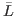

Web 68 commands
Every Web 68 command consists of the command introducer @
followed by a defining character. Some commands are followed by other
text which is delimited by the concluding command @>. See
section 3.4 for an example of the
@= command.
Such text is called ``control text'' and, like a string denotation,
must end on the same line of the Web 68 file as it began. Furthermore,
no Web 68 commands are allowed in a control text, not even @@.
(Remember that Algol 68 allows AT instead of @.
However, if you need an @ sysmbol you can get around this
restriction by typing `@'.)
The letters following each code indicate in which sections that code can
be found:-
- L
- In limbo.
- H
- In the HTML part of a section.
- M
- In the definition part of a section.
- A
- In the Algol 68 part of a section.
- C
- In a comment.
- S
- In a string.
A bar over one of these letters means that the control code ends the
present part of the Web 68 file; for example,
Ā means
that this control code ends the Algol 68 part of a section.
- @@
[A, C, H, L, M, S]
- A double @ symbol denotes a
single @ symbol. This is the only Web 68 command which is
legal in limbo, in comments and in strings.
- @
[,,]
- This
denotes the start of a plain section. A tab character or the end of
the line is equivalent to a space when it follows an @
symbol.
- @1,@2,@3
[,,]
- This denotes
the start of a level section, that is, a section which begins a new
major part of the Web 68 file. The title of the new part should
appear after the @n (n∈[1, 3])
followed by a full-stop and a
newline. HTML tags should be avoided in titles unless
they are quite simple: such as font switching commands. When tang and
weav meet a level section, they print the number of that section on
the console. The very first section should be an @1 section.
Included files cannot use level 1 sections. This ensures integrity of
the indexes.
- @a
[,]
- This denotes the start of a
part of the untagged module. weav will format the Algol 68 code
without a module tag at its start, so if you are writing a Web 68 file
based on HTML formatted documentation, you should precede each untagged
module with @a. tang will concatenate all the source code
preceded by @a.
- @d
[,]
- This denotes the start
of a declarative macro and, therefore, the end of a previous macro.
- @f
[,]
- This denotes the start of a
formatting directive which determines how a symbol should be formatted.
It should be followed by a single symbol, an equal symbol and another
single symbol. It is ignored by tang.
- @h [A]
- The control text that follows, upto the
next @> will be regarded as HTML code and formatted
along with the Algol 68 program. The text is ignored by tang, but it
can be used for various purposes by weav.
- @i
[,,,]
- The control
text upto the next @> will be regarded by both weav and
tang as the filename of a file to be included at that point. The
file will be looked for in directories previously specified to the
program (see sections 3.2.1 and 3.2.2).
Such a file is presumed to be in Web 68 format and should contain
sections as described above. It will be read completely before both
programs return to the current point in the text. Whether weav includes the
include file in the current output is determined by an
option when calling the program. The @i command may also
occur in an included file. However, circular calls will not be
honoured because both tang and weav keep a check on which files
have been included.
- @m
[,]
- This denotes the start of a
multi-call macro and, therefore, the end of a previous macro.
- @<
[A,]
- A module tag begins with this
command followed by HTML text followed by the concluding command
@>; the HTML text should not contain any Web 68 commands
other than @@, unless these commands appear in snippets (see
section 3.3.2). The module tag
may be abbreviated
after its first appearance in the Web 68 file, by giving any unique
prefix followed by ..., where the three dots immediately precede
the command @>. No module tag should be the prefix of
another. Module tags may not appear in snippets, nor may they appear
in the definition part of a module (because the appearance of a module
tag signals the end of the definition part and the beginning of the
Algol 68 part).
- @^ [A, H]
- The control text that follows, up to
the next @>, will be inserted into the index together with
the identifiers and indicants of the Algol 68 program. The text will
appear in roman type. For example, to put ``system dependencies'' into
the index, you can key `
@^system dependencies@>' in each
section that you want to index as system dependent.
- @. [A, H]
- The ``control text'' that follows, will be
inserted into the index in typewriter type; see the rules for
@ˆ which is analogous.
- @: [A, H]
- The control text that follows, will be
inserted into the index in a format controlled by the HTML tag
<code>...</code>,
which the user should define as desired; see the rules
for `@^', which is analogous.
- @! [A, H]
- The section number in an index entry will
be underlined if this command immediately precedes the identifier or
control text being indexed. This convention is used to distinguish the
sections where an identifier is defined, or where it is explained in
some special way, from the sections where it is used. A reserved bold
tag or an identifier of length one will not be indexed except for
underlined entries. An `@!' is implicitly inserted by weav just
after the bold tags proc, op
and mode,
and just after @d and @m; but you should insert your
own `@!' before the declarations of modes, denotations,
names, parameters and field selectors of structs
and operators that are not covered by this implicit convention, if you
want to improve the quality of the index that you get.
- @? [A, H]
- This command cancels an implicit (or
explicit) `@!', so that the next index entry will not be
underlined.
- @= [A]
- the control text that follows, upto the
next `
@>', will be passed verbatim to the Algol 68 program.
@\ [A]- This command forces tang to
break the line in the output Algol 68 source program here.
- @/ [A]
- This command forces weav to break the line
at this point in the output HTML file. It is ignored by tang.
- @| [A]
- This command specifies an optional line
break in the middle of an expression. For example, if you have a
complex conditional clause between if and then, or a
long expression on the right-hand side of an assignment, you can use
`@|' to specify breakpoints more logical than the ones that
the HTML choose on visual grounds. It is ignored by tang.
- @# [A]
- This command forces a line break, as
@/ does, but it also causes a little extra white space to
appear between the lines at this break. You might use it, for example,
between procedure declarations or between groups of macro definitions
that are logically separate within the same section. It is ignored by
tang.
- @, [A]
- This command inserts a thin space into
weav's output; it is ignored by tang.
- @& [A]
- This command cancels a line break that
might otherwise be inserted by weav, for example, before the bold tag
`then' if you want to put a short if-then-else-fi
construction on a single line. It is ignored by tang.
- @; [A]
- This command is treated like a semicolon,
for formatting purposes, except that it is invisible. You can use it,
for example, after a module tag when the Algol 68 text represented by
that module tag ends with a semicolon. It is ignored by tang.
- @+ [A]
- This control code forces weav to indent
the Algol 68 code from this point on this and succeeding lines. It is
ignored by tang.
- @- [A]
- This control code cancels the last
@+. It is ignored by tang.
- @{ [A]
- This control code marks the current
position as an alignment column. All subsequent lines will be aligned
to it until the control code @} is read, when the previous
alignment will be resumed. It is ignored by tang. These two control
codes must occur in pairs and may be nested.
- @} [A]
- This control code cancels the previous
@{. It is ignored by tang.
The last ten commands have no effect on the Algol 68 program output by
tang; they merely help to improve the readability of the
HTML formatted Algol 68 that is output by weav. Although Web 68 allows
you to override the automatic formatting provided by weav, your best
strategy is not to worry about such things until you have seen what
weav produces automatically, since you will probably need to make
only a few corrections when you are fine-tuning your documentation.
Because of the rules by which every section is broken into three
parts, the commands `@a', `@d' and `@m' are
not allowed to occur once the Algol 68 part of a section has begun.
Sian Mountbatten
2012-01-05